DBMS ASSIGNMENTS
Assignment 1
Q.1 Explain database architecture and application architecture.
Database Architecture:
The Database Management System (DBMS) architecture shows how data in the database is viewed by the users. It is not concerned about how the data are handled and processed by the DBMS. It helps in implementation, design, and maintenance of a database to store and organize information for companies. The concept of DBMS depends upon its architecture. The architecture can be designed as centralized, decentralized, or hierarchical. The architecture of DBMS can be defined at three levels as follows-
- External levels.
- Conceptual levels.
- Internal levels.
The main objective of the three level architecture is nothing but to separate each user view of the data from the way the database is physically represented. The database internal structure should be unaffected while changes to the physical aspects of storage. The DBA should be able to change the conceptual structure of the database without affecting all other users.
External level/ View level
External level describes a part of the database that is relevant to each user. This level insulates the users from the details of conceptual and the internal level.
Conceptual level/ logic level
Conceptual level describes what data is stored into the database and the relationship among the data.
It represents the following-
- All the entities, attributes and their relationships.
- The constraints on the data.
- Security and integrity information.
Internal level/ storage level:
Internal level is the physical representation of the database on the computer. This level describes how the data is stored in the database. It covers the data structure and file organization used to store the data on storage devices.
The levels in the architecture of DBMS are shown below in diagram form-
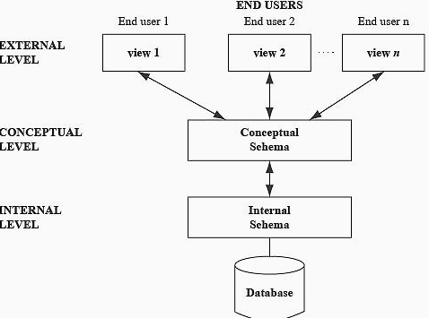Application Architecture:
- The DBMS design depends upon its architecture. The basic client/server architecture is used to deal with a large number of PCs, web servers, database servers and other components that are connected with networks.
- The client/server architecture consists of many PCs and a workstation which are connected via the network.
- DBMS architecture depends upon how users are connected to the database to get their request done.
Types of DBMS Architecture OR Application Architecture:
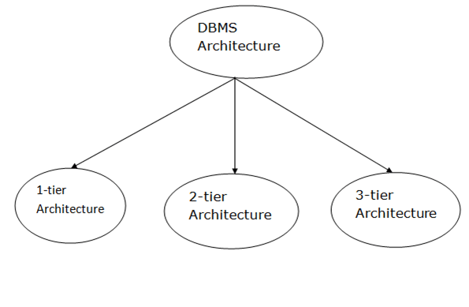
Database architecture can be seen as a single tier or multi-tier. But logically, database architecture is of two types like: 2-tier architecture and 3-tier architecture .
1-Tier Architecture-
- In this architecture, the database is directly available to the user. It means the user can directly sit on the DBMS and uses it.
- Any changes done here will directly be done on the database itself. It doesn't provide a handy tool for end users.
- The 1-Tier architecture is used for development of the local application, where programmers can directly communicate with the database for the quick response.
2-Tier Architecture:
- 2-Tier Architecture
- The 2-Tier architecture is same as basic client-server. In the two-tier architecture, applications on the client end can directly communicate with the database at the server side. For this interaction, API's like: ODBC, JDBC are used.
- The user interfaces and application programs are run on the client-side.
- The server side is responsible to provide the functionalities like: query processing and transaction management.
- To communicate with the DBMS, client-side application establishes a connection with the server side.
2-tier Architecture
3-Tier Architecture:
- The 3-Tier architecture contains another layer between the client and server. In this architecture, client can't directly communicate with the server.
- The application on the client-end interacts with an application server which further communicates with the database system.
- End user has no idea about the existence of the database beyond the application server. The database also has no idea about any other user beyond the application.
- The 3-Tier architecture is used in case of large web application.

3-tier Architecture
Q 2.Explain the E-R model with an example. (Example should be your project,assigned in the lab)
Entity-Relationship Diagrams:
ER-modeling is a data modeling method used in software engineering to produce a conceptual data model of an information system. Diagrams created using this ER-modeling method are called Entity-Relationship Diagrams or ER diagrams or ERDs.
Components of an ER Diagrams:
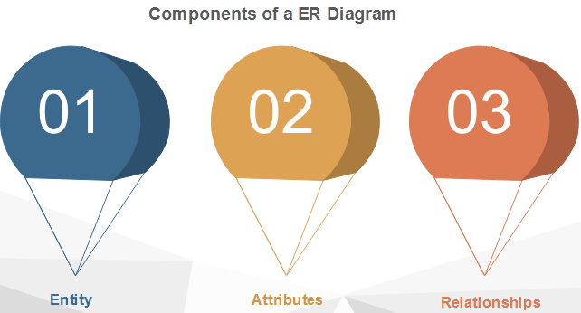
1. Entity
An entity can be a real-world object, either animate or inanimate, that can be merely identifiable. An entity is denoted as a rectangle in an ER diagram. For example, in a school database, students, teachers, classes, and courses offered can be treated as entities. All these entities have some attributes or properties that give them their identity.
Entity Set:
An entity set is a collection of related types of entities. An entity set may include entities with attribute sharing similar values. For example, a Student set may contain all the students of a school; likewise, a Teacher set may include all the teachers of a school from all faculties. Entity set need not be disjoint.
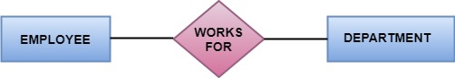
2. Attributes
Entities are denoted utilizing their properties, known as attributes. All attributes have values. For example, a student entity may have name, class, and age as attributes.
There exists a domain or range of values that can be assigned to attributes. For example, a student's name cannot be a numeric value. It has to be alphabetic. A student's age cannot be negative, etc.
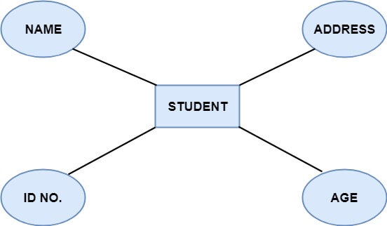
There are four types of Attributes:
- Key attribute
- Composite attribute
- Single-valued attribute
- Multi-valued attribute
- Derived attribute
for detail information click here
3. Relationships:
The association among entities is known as relationship. Relationships are represented by the diamond-shaped box. For example, an employee works_at a department, a student enrolls in a course. Here, Works_at and Enrolls are called relationships.
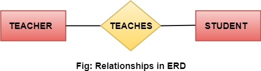 RElation in ERD
Relationship set:
A set of relationships of a similar type is known as a relationship set. Like entities, a relationship too can have attributes. These attributes are called descriptive attributes.
Degree of a relationship set:
The number of participating entities in a relationship describes the degree of the relationship. The three most common relationships in E-R models are:
- Unary (degree1)
- Binary (degree2)
- Ternary (degree3)
for detail information click here
Cardinality=>
Types of Cardinalities:
- One to One:
One entity from entity set A can be contained with at most one entity of entity set B and vice versa. Let us assume that each student has only one student ID, and each student ID is assigned to only one person. So, the relationship will be one to one.
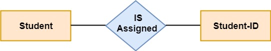 - One to Many:
More than one entity from entity set A can be associated with at most one entity of entity set B, however an entity from entity set B can be associated with more than one entity from entity set A. For example - many students can study in a single college, but a student cannot study in many colleges at the same time.
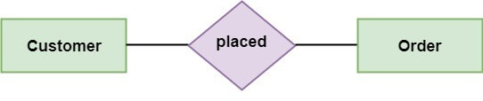 - Many to One:
More than one entity from entity set A can be associated with at most one entity of entity set B, however an entity from entity set B can be associated with more than one entity from entity set A. For example - many students can study in a single college, but a student cannot study in many colleges at the same time.
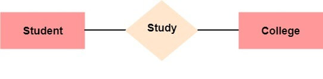
- Many to Many:
One entity from A can be associated with more than one entity from B and vice-versa. For example, the student can be assigned to many projects, and a project can be assigned to many students.
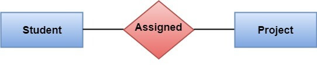
Q 3. Illustrate the extended ER model.
Extended ER Model OR Enhanced ER Model:
Extended ER is a high-level data model that incorporates the extensions to the original ER model. Enhanced ER models are high level models that represent the requirements and complexities of complex databases.
The extended Entity Relationship (ER) models are three types as given below -
- Aggregation
- Specialization
- Generalization
Specialization:
The process of designing sub groupings within an entity set is called specialization. It is a top-down process. If an entity set is given with all the attributes in which the instances of the entity set are differentiated according to the given attribute value, then that sub-classes or the sub-entity sets can be formed from the given attribute.
Example:
Specialization of a person allows us to distinguish a person according to whether they are employees or customers. Specialization of account creates two entity sets: savings account and current account.
In the E-R diagram specialization is represented by triangle components labeled ISA. The ISA relationship is referred as superclass- subclass relationship as shown below -
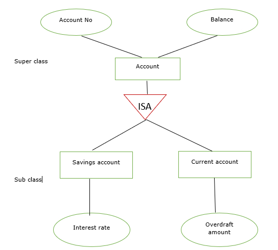Generalization:
It is the reverse process of specialization. It is a bottom-up approach.
It converts subclasses to superclasses. This process combines a number of entity sets that share the same features into higher-level entity sets.
If the sub-class information is given for the given entity set then, ISA relationship type will be used to represent the connectivity between the subclass and superclass as shown below -
Example:
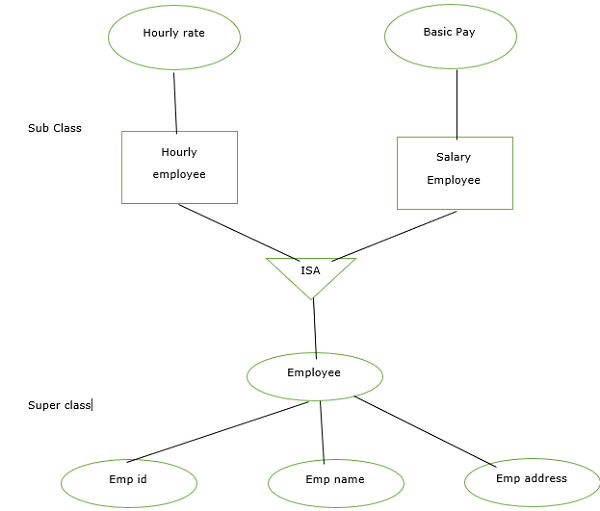Aggregation:
It is an abstraction in which relationship sets are treated as higher level entity sets and can participate in relationships. Aggregation allows us to indicate that a relationship set participates in another relationship set.
Aggregation is used to simplify the details of a given database where ternary relationships will be changed into binary relationships. Ternary relation is only one type of relationship which is working between three entities.
Aggregation is shown in the image below −
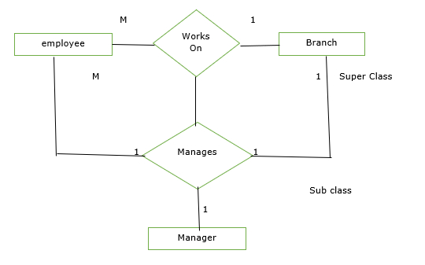Assignment 2:
Q 2. Given a relation R( P, Q, R, S, T) and Functional Dependency set FD = { PQ → R, S → T }, determine whether the given R is in 2NF? If not convert it into 2 NF.
Solutio:
Let us construct an arrow diagram on R using FD to calculate the candidate key.
From above arrow diagram on R, we can see that an attributes PQS is not determined by any of the given FD, hence PQS will be the integral part of the Candidate key, i.e., no matter what will be the candidate key, and how many will be the candidate key, but all will have PQS compulsory attribute.
Let us calculate the closure of PQS
PQS + = PQSRT (from the method we studied earlier)
Since the closure of PQS contains all the attributes of R, hence PQS is Candidate Key
Since all key will have PQS as an integral part, and we have proved that PQS is Candidate Key. Therefore, any superset of PQS will be Super Key but not Candidate key.
Hence there will be only one candidate key PQS
Definition of 2NF:
Since R has 5 attributes: - P, Q, R, S, T and Candidate Key is PQS, Therefore, prime attributes (part of candidate key) are P, Q, and S while a non-prime attribute is R and T
a) FD: PQ → R does not satisfy the definition of 2NF, that non-prime attribute( R) is partially dependent on part of candidate key PQS.
b) FD: S → T does not satisfy the definition of 2NF, as a non-prime attribute(T) is partially dependent on candidate key PQS (i.e., key should not be broken at any cost).
Hence, FD PQ → R and S → T, the above table R( P, Q, R, S, T) is not in 2NF
Convert the table R( P, Q, R, S, T) in 2NF:
Since due to FD: PQ → R and S → T, our table was not in 2NF, let's decompose the table
R1(P, Q, R) (Now in table R1 FD: PQ → R is Full F D, hence R1 is in 2NF)
R2( S, T) (Now in table R2 FD: S → T is Full F D, hence R2 is in 2NF)
And create one table for the key, since the key is PQS.
R3(P, Q, S)
Finally, the decomposed tables which is in 2NF are:
b) R2(S, T)
c) R3(P, Q, S)
Q 3. Given a relation R( P, Q, R, S, T, U, V, W, X, Y) and Functional Dependency set FD = { PQ → R, PS → VW, QS → TU, P → X, W → Y }, determine whether the given R is in 2NF? If not convert it into 2 NF.
Solution:
Let us construct an arrow diagram on R using FD to calculate the candidate key.
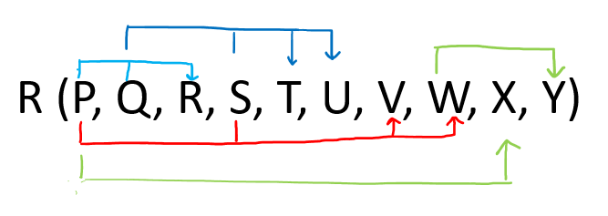From above arrow diagram on R, we can see that an attributes PQS is not determined by any of the
given FD, hence PQS will be the integral part of the Candidate key, i.e. no matter what will be the
candidate key, and how many will be the candidate key, but all will have PQS compulsory attribute.
Let us calculate the closure of PQS
PQS + = P Q S R T U V W X Y (from the closure method we studied earlier)
Since the closure of PQS contains all the attributes of R, hence PQS is Candidate Key
From the definition of Candidate Key(Candidate Key is a Super Key whose no proper subset is a
Super key)
Since all key will have PQS as an integral part, and we have proved that PQS is Candidate Key,
Therefore, any superset of PQS will be Super Key but not a Candidate key.
Hence there will be only one candidate key PQS
Definition of 2NF: No non-prime attribute should be partially dependent on Candidate Key
Since R has 10 attributes: - P, Q, R, S, T, U, V, W, X, Y, and Candidate Key is PQS calculated using
FD = { PQ → R, PS → VW, QS → TU, P → X, W → Y }. Therefore, prime attribute(part of candidate key)
are P, Q, and S while non-prime attribute are R, T, U, V, W, X and Y
a. FD: PQ → R does not satisfy the definition of 2NF, that non-prime attribute( R) is partially
dependent on part of candidate key PQS
b. FD: PS → VW does not satisfy the definition of 2NF, that non-prime attribute( VW) is
partially dependent on part of candidate key PQS
c. FD: QS → TU does not satisfy the definition of 2NF, that non-prime attribute( TU) is
partially dependent on part of candidate key PQS
d. FD: P → X does not satisfy the definition of 2NF, that non-prime attribute( X) are partially
dependent on part of candidate key PQS
e. FD: W → Y does not violate the definition of 2NF, as the non-prime attribute(Y) is dependent
on the non-prime attribute(W), which is not related to the definition of 2NF.
Hence because of FD: PQ → R, PS → VW, QS → TU, P → X the above table R( P, Q, R, S, T, U, V, W, X,
Y) is not in 2NF
Convert the table R( P, Q, R, S, T, U, V, W, X, Y) in 2NF:
Since due to FD: PQ → R, PS → VW, QS → TU, P → X our table was not in 2NF, let's decompose the
table
R1(P, Q, R) (Now in table R1 FD: PQ → R is Full F D, hence R1 is in 2NF)
R2( P, S, V, W) (Now in table R2 FD: PS → VW is Full F D, hence R2 is in 2NF)
R3( Q, S, T, U) (Now in table R3 FD: QS → TU is Full F D, hence R3 is in 2NF)
R4( P, X) (Now in table R4 FD : P → X is Full F D, hence R4 is in 2NF)
R5( W, Y) (Now in table R5 FD: W → Y is Full F D, hence R2 is in 2NF)
And create one table for the key, since the key is PQS.
R6(P, Q, S)
Finally, the decomposed tables which is in 2NF are:
R1(P, Q, R)
R2( P, S, V, W)
R3( Q, S, T, U)
R4( P, X)
R5( W, Y)
R6(P, Q, S)